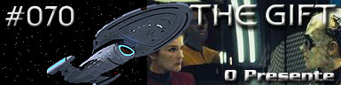
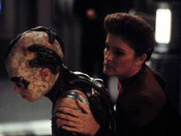
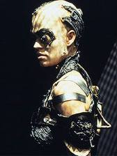
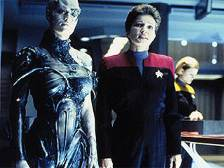
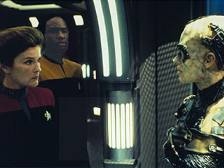
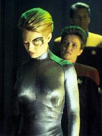

|
Voyager
Temporada 4

Anlise do episódio por
Daniel
Sasaki


| MANCHETE
DO EPISDIO Data Estelar: 51008  Quando Seven of Nine descobre que seu elo com a Coletividade foi cortado, ela protesta veementemente e pede para ser levada de volta aos Borgs, mas cai em ouvidos surdos. Investigando o passado da zangão, Janeway descobre que ela se chamava Annika Hansen e que foi assimilada ainda criana. medida que a fisiologia humana comea a se manifestar, o sistema imunolgico de Seven passa a rejeitar os implantes Borgs e o Doutor se v obrigado a remov-los. Enquanto a situao acontece na Enfermaria, Kes experimenta um desenvolvimento sem precedentes em suas habilidades telepticas.Janeway pede que Seven ajude a tripulao a remover as modificaes Borgs que fez nave. Porm, enquanto trabalha, ela acessa o transmissor subespacial, em uma tentativa de se comunicar com a Coletividade. Kes sente a ameaa e com suas novas habilidades impede que a nova tripulante transmita. Seven , então, colocada em uma cela. Janeway a visita e tem uma longa conversa, tentando-a convencer a aceitar sua nova condio e a recuperar a humanidade há muito perdida.  Tuvok, que vinha acompanhando as mudanas em Kes, descobre que sua transformao está danificando a infra-estrutura da Voyager em nvel subatmico. A Ocampa decide que hora de deixar os amigos para explorar essa nova existncia. Ela mal consegue se despedir e sair em uma nave auxiliar, quando dissolve-se em pura energia. Antes de partir, no entanto, presenteia a tripulao atirando a Voyager em segurana cerca de 10.000 anos-luz mais perto de casa.O Doutor extrai o mximo de tecnologia Borg do corpo de Seven, recuperando a aparncia humana e a agora ex-zangão comea o processo de readaptao vida como indivíduo em uma comunidade.
"The Gift" encerra uma trilogia bem-sucedida. Parece que Voyager finalmente está encontrando o seu próprio caminho. O roteiro muito bom e parece subestimado por alguns trekkers - o que no significa que no apresente problemas. A história composta de duas sub-tramas: a chegada de Seven of Nine e a sada de Kes. A primeira foi impecvel. J a segunda deixou a desejar.  Tudo isso que estava em falta veio e aconteceu em velocidade de dobra no exguo espao de tempo de 45 minutos. Em "The Gift", aprende-se mais sobre Kes do que em todas as temporadas anteriores. a que o episódio peca. As transformaes por que ela passa so misteriosas, no se sabe de onde vm ou por que vm, desenvolvem-se rpido demais e terminam sem explicaes. Realmente, depreende-se que os roteiristas precisavam tir-la de qualquer forma da série.  Mas, afinal, tratava-se de uma escolha? Janeway no podia devolver a ex-zangão colmia, primeiro porque estaria colocando a vida de toda a tripulao em risco e, depois, porque o metabolismo humano de Seven j estava se manifestando e pedia cuidados mdicos imediatos. Alm disso, pensava Janeway, a passageira foi assimilada quando criana; nunca teve a chance de compreender o que ser humana antes de sucumbir s bilhes de mentes da Coletividade. Em suma, nunca pde escolher um caminho para a sua vida. Ele lhe foi imposto pelos Borgs.  Janeway também brilha no segmento. Suas decises em relao a Seven - to injustas e insensveis superfcie - so as mais humanas que um capitão poderia tomar. Aqui, Janeway mais do que capitã. também uma lder comunitria e tem-se de fato um senso de famlia na série, algo que costuma faltar na maioria dos episódios. Fica muito claro no apenas o potencial que Voyager tem e que desperdiado, mas a versatilidade de Kate Mulgrew como atriz. Se se pode atribuir falhas a Janeway, a responsabilidade deve cair exclusivamente sobre os roteiristas. Por fim, o presente de Kes: a sequência, completada com a cena de Tuvok acendendo uma vela perto da janela, foi de trazer lgrimas aos olhos e sinaliza bons ventos. A Voyager deu o seu primeiro grande salto em direção à Terra. Correu 10.000 anos-luz em questo de minutos e isso traz um grande refresco trama maior. Revigoram-se as esperanas da tripulao. Novas raas aparecero. Quem sabe a partir daqui o Quadrante Delta passar a ser verdadeiramente explorado. esperar para ver. Seven of Nine - "We need nothing
from you. We are Borg." Tuvok -
"Perhaps she's experiencing an after effect of some kind." Doutor
- "If you think there's a risk, Mr. Tuvok, you can throw one of your little
force fields around the chamber." Kes
- "I can see further, beyond the subatomic." Janeway - "I have an Ocampa who wants to
become something more and a Borg who's afraid of becoming something less. Here's
to Vulcan stability." Seven
of Nine - "You are hypocritical, manipulative. We do not want to be what
you are! Return us to the Collective!" Janeway
- "She's thrown us safely beyond Borg space... ten years closer to home."
Roteiro
de Joe Menosky Elenco: Kate
Mulgrew como Kathryn Janeway Elenco
convidado: |